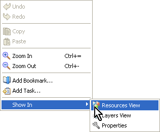

Show In
By default, Carbide.ui shows the relevant information
for a component selected in the Editor, in other views. However this
option of automatic synchronization of views can be turned off. Show In
allows you to force the
Resource View, Layers View, or Properties view to show information
about a selected component.

Figure:
Show In